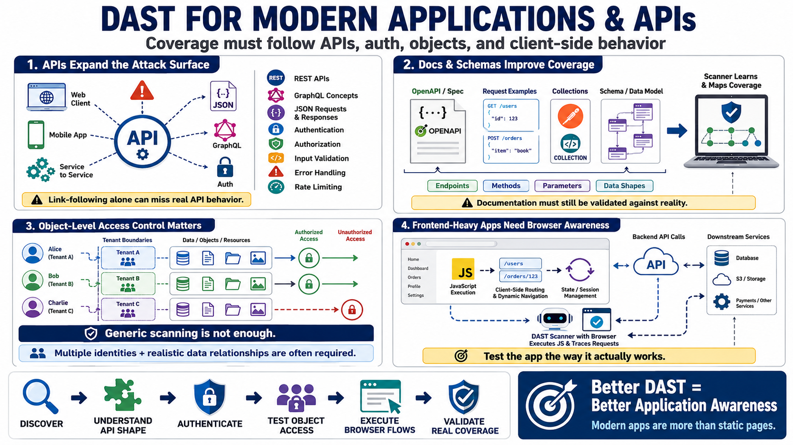

API and Modern Application Testing
Connecting to LMS... Progress: in progress

Narration
Modern applications often expose security-sensitive behavior through APIs used by web, mobile, and service clients. REST APIs, GraphQL concepts at a high level, JSON request and response handling, API authentication, authorization, input validation, error handling, and rate limiting all shape runtime risk. A DAST program that only follows visible links may miss important API behavior.
API documentation and schemas can improve coverage. OpenAPI descriptions, request examples, collections, or schema-driven testing concepts help scanners understand endpoints, parameters, methods, and expected data shapes. Documentation still needs validation against reality. An API may expose undocumented paths, require specific authorization context, or behave differently depending on tenant, role, or object state.
Object-level access control is a core API concern. Testing should consider whether users can access only the records, tenants, objects, files, or resources they are authorized to access. This is difficult for generic scanners because it requires multiple identities and meaningful data relationships. DAST can support the evidence, but application knowledge and test design are often required.
Frontend-heavy applications add browser behavior and client-side routing. A scanner may need to execute JavaScript, maintain state, follow dynamic navigation, and understand backend requests generated by the client. Service integrations also matter because APIs often call downstream systems. DAST must adapt to how the application actually works rather than assuming every target is a simple collection of static pages.